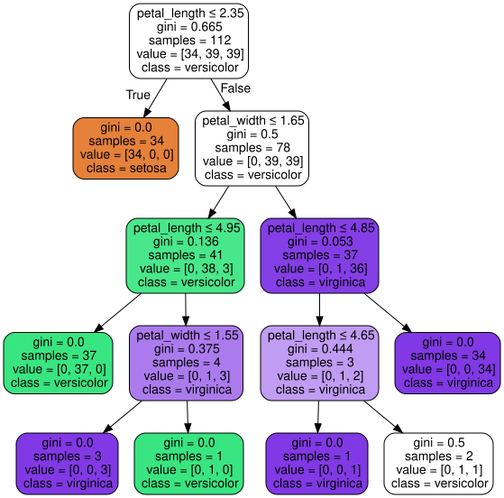

Overfitting et underfitting#
Deux maladies classiques des modèles de machine learning — et probablement les concepts les plus importants à maîtriser quand on débute.
L’analogie de l’étudiant qui révise :
Underfitting (sous-apprentissage) : un étudiant qui n’a pas assez révisé. Il rate son contrôle, mais il raterait aussi n’importe quel autre exercice similaire. Son modèle du cours est trop simple pour capturer ce qu’il faut retenir.
Bon apprentissage : un étudiant qui a compris les principes du cours. Il réussit son contrôle et s’en sortirait aussi sur des exercices un peu différents. Il a généralisé.
Overfitting (sur-apprentissage) : un étudiant qui a appris par cœur les exercices du livre, y compris les fautes de frappe. Il a 20/20 sur ces exercices précis, mais s’effondre dès qu’on change une seule donnée. Il a mémorisé, pas compris.
L’objectif du ML, c’est de produire le 2e étudiant : un modèle qui généralise, pas qui mémorise.
Dans ce notebook, on va :
Voir concrètement ce qui se passe quand on laisse un arbre de décision overfitter ;
Voir ce qui se passe quand on le brid trop (underfitting) ;
Comprendre le compromis biais-variance qui est derrière tout ça.
import numpy as np
import matplotlib.pyplot as plt
from sklearn.tree import DecisionTreeClassifier
from sklearn.model_selection import train_test_split
from sklearn.datasets import load_iris
iris = load_iris()
X = iris.data[:, 2:] # petal length et petal width
y = iris.target
X_train, X_test, y_train, y_test = train_test_split(X, y, test_size=.25, random_state=2)
Overfitting (sur-apprentissage)#
Le symptôme à reconnaître : un modèle qui obtient un score très élevé sur le train (parfois parfait) mais un score nettement plus faible sur le test. L’écart train/test est le signal d’alarme.
On va le provoquer volontairement en laissant un DecisionTreeClassifier grandir sans aucune limite de profondeur. L’arbre pourra alors créer autant de branches que nécessaire pour mémoriser chaque exemple du jeu d’entraînement — y compris le bruit.
tree_over_clf = DecisionTreeClassifier(random_state=2)
tree_over_clf.fit(X_train, y_train)
DecisionTreeClassifier(random_state=2)In a Jupyter environment, please rerun this cell to show the HTML representation or trust the notebook.
On GitHub, the HTML representation is unable to render, please try loading this page with nbviewer.org.
DecisionTreeClassifier(random_state=2)
Structure de l’arbre#
Observez la complexité de l’arbre ci-dessous (beaucoup de nœuds, beaucoup de feuilles avec très peu d’échantillons chacune). Comparez-la avec la structure de l’arbre à max_depth = 2 vue dans 04-understand-decision-tree.
Un arbre trop profond, c’est littéralement un arbre qui a créé des règles du genre « si petal_length entre 4,85 et 4,95 et petal_width > 1,65 alors virginica » — c’est-à-dire des règles sur-mesure pour 1 ou 2 fleurs du jeu de train, qui n’ont aucun sens général. C’est ça, mémoriser au lieu de comprendre.
from sklearn.tree import export_graphviz
from graphviz import Source
dot_data = export_graphviz(tree_over_clf, out_file=None,
feature_names=["petal_length", "petal_width"],
class_names=iris.target_names,
filled=True, rounded=True,
special_characters=True)
Source(dot_data)

Justesse de la prédiction (accuracy)#
Pour évaluer les résultats du modèle on utilise la fonction score, qui donne l”accuracy : le pourcentage de prédictions correctes.
\( \text{accuracy} = \frac{\text{nombre de bonnes prédictions}}{\text{nombre total de prédictions}} \)
Pour détecter l’overfitting, le réflexe est de comparer deux scores :
score(X_train, y_train)→ ce que le modèle obtient sur les données qu’il a vues.score(X_test, y_test)→ ce qu’il obtient sur les données qu’il n’a jamais vues.
Règle de lecture :
Si train ≈ test, et les deux sont bons → 🎉 bonne généralisation.
Si train ≈ test, mais les deux sont faibles → 😓 underfitting (modèle trop simple).
Si train >> test → 🚨 overfitting (modèle qui mémorise au lieu de généraliser).
Rappel: modèle avec max_depth = 3#
tree_clf = DecisionTreeClassifier(max_depth=3, random_state=2)
tree_clf.fit(X_train, y_train)
DecisionTreeClassifier(max_depth=3, random_state=2)In a Jupyter environment, please rerun this cell to show the HTML representation or trust the notebook.
On GitHub, the HTML representation is unable to render, please try loading this page with nbviewer.org.
DecisionTreeClassifier(max_depth=3, random_state=2)
tree_clf.score(X_train, y_train)
0.9821428571428571
tree_clf.score(X_test, y_test)
0.9736842105263158
Modèle sans limite de profondeur (l’arbre peut grandir autant qu’il veut)#
Le DecisionTreeClassifier créé plus haut ne passe aucun hyperparamètre, donc scikit-learn laisse l’arbre grandir jusqu’à ce que chaque feuille soit parfaitement pure (ou presque). C’est le terrain de jeu rêvé pour l’overfitting.
tree_over_clf.score(X_train, y_train)
0.9910714285714286
tree_over_clf.score(X_test, y_test)
0.9210526315789473
Diagnostic : overfitting confirmé#
Overfitting : sur-adaptation du modèle au jeu d’apprentissage, aux dépens de sa capacité de généralisation.
Observez les chiffres :
train: 99,1% — quasi parfait, l’arbre a mémorisé le jeu d’entraînement.test: 92,1% — nettement moins bon que le modèlemax_depth=3qui, lui, était à 97,4% sur le test.
L’arbre profond est meilleur sur le train mais moins bon sur le test que l’arbre limité. Il a gagné 1 point sur le train et perdu 5 points sur le test — c’est une très mauvaise affaire !
Moralité : limiter la profondeur de l’arbre (max_depth=3) a restreint sa capacité à s’adapter au jeu d’apprentissage, au bénéfice de sa capacité à généraliser à de nouveaux cas. C’est ce qu’on appelle régulariser le modèle.
Underfitting (sous-apprentissage)#
Le symptôme à reconnaître : un modèle dont train et test sont tous deux mauvais, et proches l’un de l’autre. Pas d’écart à combler — le modèle est simplement trop pauvre pour capturer la structure des données.
On va provoquer ce cas en bridant trop l’arbre, avec max_depth=2 (seulement 2 questions possibles avant de prédire, alors que les données demanderaient plus de finesse).
tree_under_clf = DecisionTreeClassifier(max_depth=2, random_state=2)
tree_under_clf.fit(X_train, y_train)
DecisionTreeClassifier(max_depth=2, random_state=2)In a Jupyter environment, please rerun this cell to show the HTML representation or trust the notebook.
On GitHub, the HTML representation is unable to render, please try loading this page with nbviewer.org.
DecisionTreeClassifier(max_depth=2, random_state=2)
tree_under_clf.score(X_train, y_train)
0.9642857142857143
tree_under_clf.score(X_test, y_test)
0.9473684210526315
Diagnostic : underfitting#
Underfitting : le modèle, sur-contraint, n’arrive ni à bien s’adapter au jeu d’apprentissage, ni aux nouveaux cas.
Observez les chiffres :
train: 96,4%test: 94,7%
Les deux scores sont proches (pas d’overfitting visible) mais tous les deux inférieurs à ce qu’on obtenait avec max_depth=3. L’arbre est trop simple pour exploiter toute l’information disponible dans les données.
À noter : sur ce petit dataset, l’underfitting est peu spectaculaire (différence de ~2 points), mais dans des problèmes réels il peut être dévastateur : un modèle linéaire sur des données très non-linéaires peut avoir un train score de 50% là où un modèle bien choisi atteindrait 95%.
Biais versus variance d’un modèle#
Complexité du modèle#
Un modèle peut être plus ou moins complexe. La plupart des algorithmes permettent de produire des modèles de plus ou moins grande complexité à l’aide de leurs hyperparamètres. Par exemple max_depth pour DecisionTreeClassifier, qui en possède bien d’autres. En limitant la profondeur de l’arbre, l’algorithme perd des degrés de liberté et produit un modèle plus simple. On dit que max_depth est un paramètre de régularisation.
Règle pratique pour
DecisionTreeClassifier: augmenter un hyperparamètremin_*ou diminuer un hyperparamètremax_*a un effet de régularisation (= bride le modèle, le rend plus simple, réduit l’overfitting).
Biais et variance : les deux sources d’erreur#
En statistique et en apprentissage automatique, les notions de biais et de variance sont cruciales pour comprendre d’où vient l’erreur d’un modèle et comment l’améliorer.
Le biais#
Définition : erreur introduite par la simplification excessive d’un modèle. Autrement dit : « qu’est-ce que mon modèle est structurellement incapable d’apprendre ? ».
Un modèle à biais élevé fait des suppositions simplificatrices sur les données (ex. « la relation est linéaire »), ce qui conduit à des erreurs systématiques peu importe la quantité de données.
Un biais élevé → underfitting.
Exemple : utiliser un modèle linéaire pour prédire une relation en réalité non-linéaire. Peu importe combien de points on lui donne, il tracera une droite et se trompera.
La variance#
Définition : sensibilité d’un modèle aux fluctuations aléatoires des données d’entraînement. Autrement dit : « si je change un peu les données, à quel point mon modèle change-t-il ? ».
Un modèle à variance élevée change beaucoup d’un jeu d’entraînement à un autre. Il apprend le bruit aléatoire des données autant que le signal.
Une variance élevée → overfitting.
Exemple : un arbre très profond qui s’adapte parfaitement à chaque point d’entraînement — retire une seule donnée et tout l’arbre se réorganise.
L’image mentale à garder : le tir à la cible#

Biais faible + variance faible → tous les tirs groupés au centre. 🎯 Modèle idéal.
Biais élevé + variance faible → tous les tirs groupés, mais loin du centre. Modèle cohérent mais faux (underfitting).
Biais faible + variance élevée → tirs dispersés autour du centre. Modèle juste en moyenne, mais instable (overfitting).
Biais élevé + variance élevée → tirs dispersés et mal placés. Le pire cas.
Le compromis biais-variance#
Il existe un compromis inhérent entre le biais et la variance :
Réduire le biais (modèle plus complexe) augmente la variance (modèle plus instable).
Réduire la variance (modèle plus simple) augmente le biais (modèle plus rigide).
L’objectif est de trouver l’équilibre optimal qui minimise l’erreur totale sur des données nouvelles (le jeu de test).
.png)
Lecture du graphique :
À gauche (modèle simple) : biais élevé, variance faible → underfitting.
À droite (modèle complexe) : biais faible, variance élevée → overfitting.
Au milieu : la zone optimale, celle qu’on cherche à atteindre en ajustant les hyperparamètres.
C’est littéralement le cœur du métier de data scientist : trouver le niveau de complexité adapté au problème et à la quantité de données disponibles.
🎯 En pratique — comment détecter et corriger l’overfitting ?#
Détecter#
Le diagnostic se fait en 3 étapes :
Séparer les données en train / validation / test (ou utiliser la validation croisée).
Comparer les scores sur train et sur validation. L’écart est ton baromètre :
écart faible → OK ou underfitting
écart grand → overfitting
Tracer une courbe d’apprentissage (
learning_curvede scikit-learn) : score train et score validation en fonction de la taille du jeu d’entraînement.Courbes très séparées qui ne se rejoignent pas → overfitting, il faut plus de données ou moins de complexité.
Courbes qui se rejoignent vite à un niveau bas → underfitting, il faut plus de complexité ou de meilleures features.
Corriger#
Contre l’overfitting (ordre de préférence) :
Plus de données d’entraînement — la solution la plus efficace quand c’est possible.
Régulariser : brider la complexité du modèle (↓
max_depth, ↑min_samples_leaf, ↑alphaen régression linéaire, ↑dropouten deep learning…).Simplifier le modèle (moins de features, modèle moins flexible).
Méthodes d’ensemble (Random Forest, Bagging) : moyenner plusieurs modèles réduit la variance sans toucher au biais — c’est pour ça que les Random Forests marchent si bien.
Early stopping : arrêter l’entraînement avant que le modèle ne se mette à mémoriser (standard en deep learning).
Contre l’underfitting :
Plus de complexité : moins de régularisation, plus de profondeur, plus de features polynomiales…
Changer de modèle : passer d’un linéaire à un non-linéaire, d’un arbre à une forêt, etc.
Feature engineering : créer des features plus expressives (log, interactions, ratios métier…).
⚠️ PAS de « plus de données » : si le modèle est trop pauvre, plus de données ne l’aideront pas à capturer ce qu’il ne sait structurellement pas capturer.
À retenir#
Toujours comparer score train et score test (ou validation). C’est le geste le plus simple, le plus informatif, et celui qui évite 90% des erreurs de débutant en ML.
Un modèle qui te donne 99% sur ton jeu d’entraînement ne dit rien de sa qualité réelle — il dit seulement qu’il a bien appris… son jeu d’entraînement. Ce qui compte, c’est ce qu’il fait sur le test.